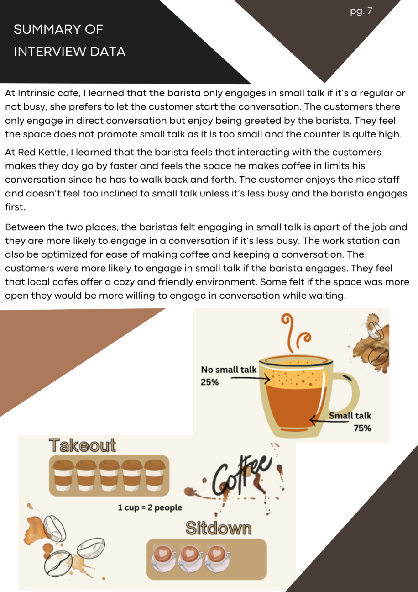

Cafe Culture- an ethnographic study
An ethnographic study where I observed the interactions between costumers and baristas in a cafe setting. The goal was to understand the small talk that occurred during the ordering and waiting process. I aimed to create a space that not only accommodates but actively encourages costumers and baristas to engage in more extensive and meaningful small talk. The research conducted at multiple local cafes served as an aid to redesigning the serving counter to foster a sense of community within a cafe.
Full Report


